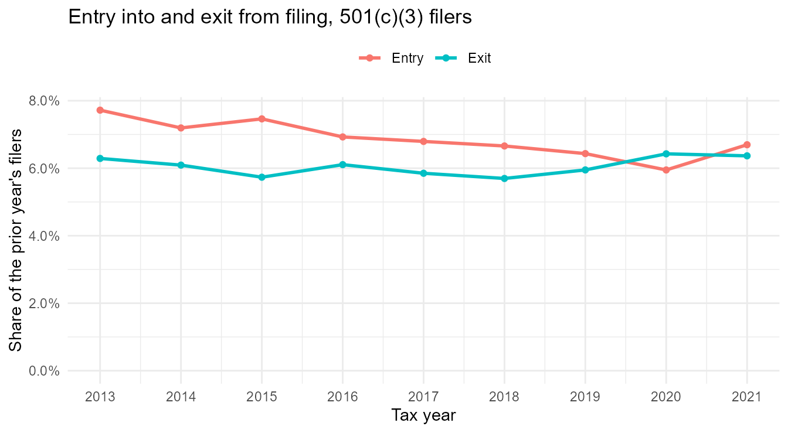
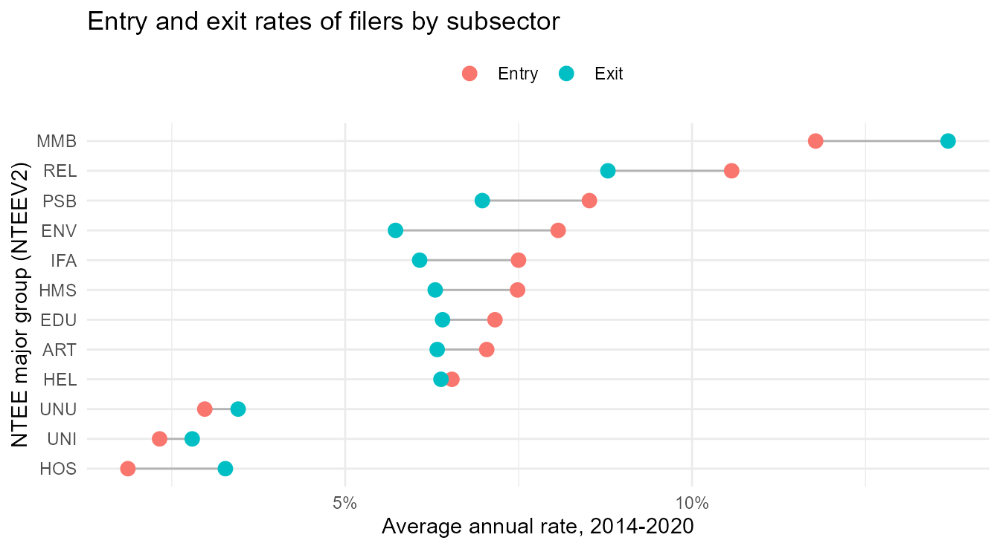
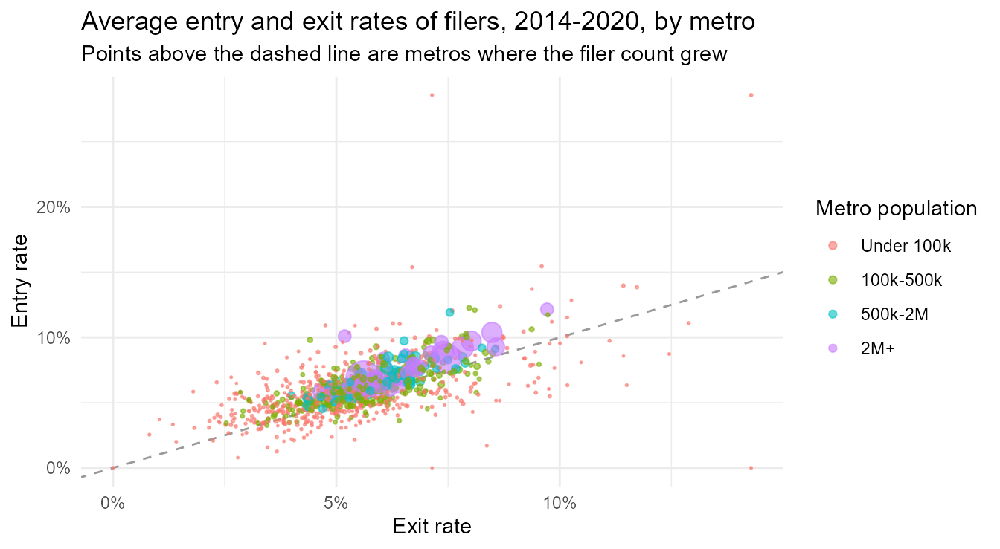
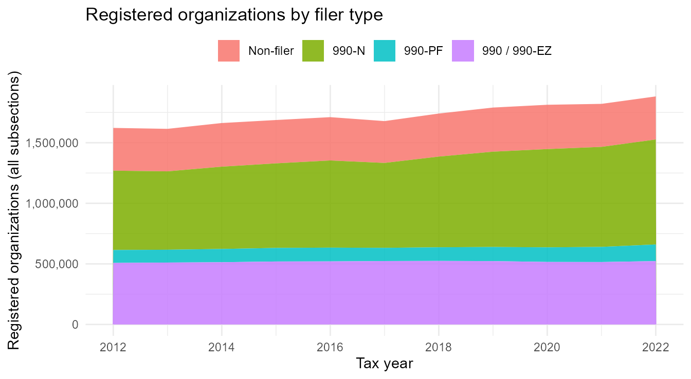
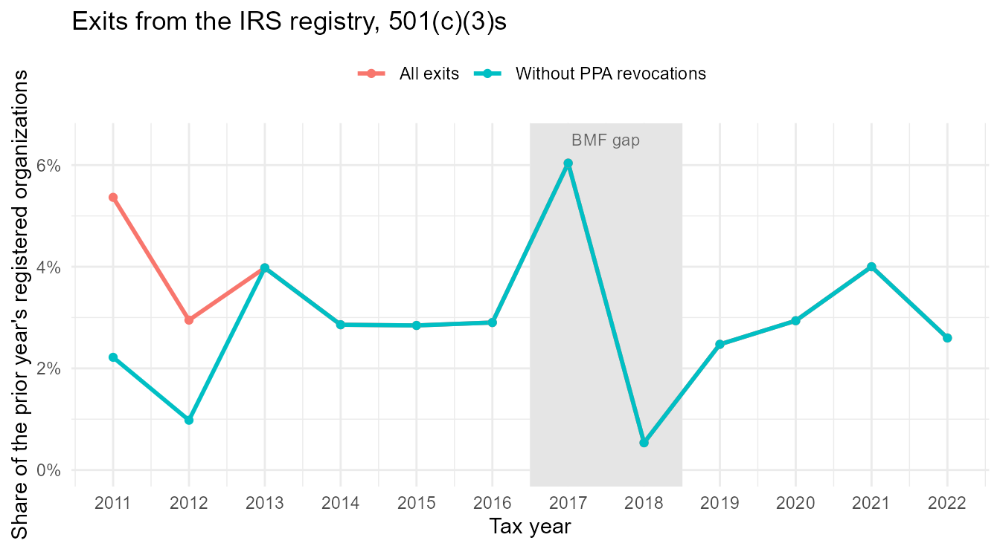
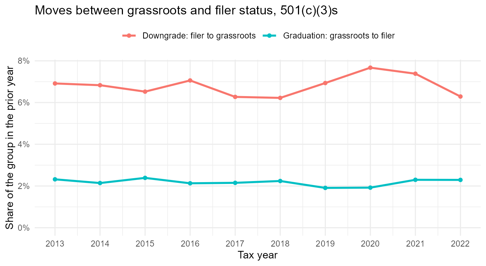

Competition metrics describe a market at one moment. This article covers two extensions:
- Universes. Which organizations count as part of a market.
- Dynamics. How the number of organizations in a market changes as they enter and exit.
It first explains the methods, then shows national and metro patterns for US 501(c)(3) organizations, built from NCCS data.
library( npcompete )
library( ggplot2 )
dd <- readRDS( "dynamics-data.rds" ) # built by data-raw/create-dynamics-vignette-data.RThe numbers below come from live NCCS builds
(source = "nccs"). The script
data-raw/create-dynamics-vignette-data.R in the package
repository rebuilds them. Running the same calls yourself downloads
about 1.5 GB of NCCS files the first time.
Part 1: Methods
Three universes
Not every nonprofit files the same IRS return, and the return an organization files decides what we know about it.
| Universe | Who | Financial data | Metrics |
|---|---|---|---|
"filers" |
Organizations that file a Form 990 or 990-EZ | Yes | All |
"registered" |
Every organization on the IRS registry that year | Filers only | Counts, density, age, grassroots share, dynamics |
"grassroots" |
Registered organizations that file a 990-N postcard or file nothing | No | Counts, density, age, dynamics |
The filers universe is what most nonprofit research uses. It leaves out most organizations: every small group with gross receipts under $50,000 (which files the 990-N postcard), and every church or other organization not required to file.
npc_get_orgs() and npc_build_metrics() take
a universe argument. Metrics that need revenue, expenses or
assets refuse to run on a universe without them:
npc_metrics( "grassroots" )$id
#> [1] "DENSITY_PER_100K" "DENSITY_PCTL_N" "MEDIAN_AGE" "ENTRY_RATE"
#> [5] "EXIT_RATE" "NET_GROWTH" "CHURN_RATE"
npc_build_metrics( 2019, universe = "grassroots", metrics = "HHI" )
#> Error:
#> ! HHI requires financial data; grassroots organizations do not report revenue, expenses or assets. Use universe = "filers", or see npc_metrics("grassroots") for metrics valid for grassroots.Building the registered universe
npc_build_registered() builds one row per organization
and tax year from four NCCS sources:
- The unified Business Master File (BMF). One record per EIN, with ruling date, subsection, filing requirement code, NTEE code, geocoded county, and the first and last monthly BMF release the EIN appeared in.
- The IRS automatic revocation list, with revocation and reinstatement dates.
- The 990-N e-postcard file, which holds each organization’s latest postcard.
- The filer panel for the year: the archive or a live NCCS build.
An organization is registered in tax year t from its ruling year (or its first BMF appearance, if earlier) through the year of its last BMF appearance. An organization still in the latest BMF stays registered. Years between a revocation and a reinstatement are dropped, and a revocation ends the span if it comes first. Any organization that filed a 990 or 990-EZ in t is registered in t.
Each registered organization-year then gets a filer type:
FILER_TYPE |
Rule |
|---|---|
"990", "990EZ"
|
In the filer panel for that tax year |
"990PF" |
A private foundation (BMF PF filing requirement or foundation code) |
"990N" |
Not a filer, and either filed a 990-N for that year or has a BMF filing requirement code of 2 (receipts under the 990-N threshold) |
"NONFILER" |
Everyone else: churches not required to file, dormant organizations not yet revoked, organizations missing from the panel |
The grassroots universe is the 990N and
NONFILER rows. Churches (filing requirement code 6,
CHURCH = TRUE) are included by default;
exclude_churches = TRUE drops them.
Limitations.
- The postcard file keeps only each organization’s latest 990-N, so past 990-N filing is mostly inferred from the current BMF filing requirement code.
- NCCS kept only three BMF releases between August 2016 and January 2022. An exit in those years without a revocation date is dated to the last release in which the organization appeared.
Entries and exits
get_dynamics() follows each organization from year to
year within one universe. For a market and year t:
- An entry is an organization present in t but not in t − 1.
- An exit is an organization present in t −
1 and then absent for at least
absent_yearsyears. - Rates divide by the number of organizations in t − 1:
Entries are counted in the market where the organization is in
t, and exits in the market where it was in t − 1. An
organization that moves between markets is neither; it changes
NET_GROWTH in both markets but not the entry or exit
rates.
Gaps, and why absent_years matters
Filers often miss a year: a late return, an extension, or a return
the IRS processed late. Treating every missed year as an exit and then a
re-entry would double-count churn. So absences shorter than
absent_years are filled: the organization counts as
present, with its prior location and subsector.
-
Filers: default
absent_years = 2. An exit needs two straight years without a 990 or 990-EZ. -
Registered and grassroots: default
absent_years = 1. Absence from the registry is observed directly, not inferred from a missing filing.
The toy example below shows the rules. Organization a is present throughout, b leaves after 2019, c enters in 2020, and d misses 2019.
toy <- data.frame(
EIN2 = c( "a", "a", "a", "a", "b", "b", "c", "c", "d", "d", "d" ),
GEO = "X", SUB = "ART",
YEAR = c( 2018:2021, 2018, 2019, 2020, 2021, 2018, 2020, 2021 ) )
two <- get_dynamics( toy, geography = "GEO", subsector = "SUB", year = "YEAR",
absent_years = 2 )
one <- get_dynamics( toy, geography = "GEO", subsector = "SUB", year = "YEAR",
absent_years = 1 )
cols <- c( "YEAR", "N_PREV", "ENTRIES", "EXITS", "ENTRY_RATE", "EXIT_RATE" )
subset( two, GEO == "X" & SUB == "ALL" )[ cols ]
#> # A tibble: 3 × 6
#> YEAR N_PREV ENTRIES EXITS ENTRY_RATE EXIT_RATE
#> <int> <dbl> <dbl> <dbl> <dbl> <dbl>
#> 1 2019 3 0 0 0 0
#> 2 2020 3 1 1 0.333 0.333
#> 3 2021 3 0 NA 0 NA
subset( one, GEO == "X" & SUB == "ALL" )[ cols ]
#> # A tibble: 3 × 6
#> YEAR N_PREV ENTRIES EXITS ENTRY_RATE EXIT_RATE
#> <int> <dbl> <dbl> <dbl> <dbl> <dbl>
#> 1 2019 3 0 1 0 0.333
#> 2 2020 2 2 1 1 0.5
#> 3 2021 3 0 0 0 0With absent_years = 2, d’s missing year is
filled and the only events are c’s entry and b’s exit.
With absent_years = 1, d exits in 2019 and
re-enters in 2020.
Censoring
An exit can be confirmed only once the organization has been absent
for absent_years years. Exits in the last
absent_years − 1 observed years are therefore
NA, as EXITS is for 2021 above with
absent_years = 2. npc_build_metrics() reads
the extra years that dynamics need when they exist:
absent_years years before the first requested year, and
absent_years − 1 after the last. It skips years flagged
incomplete.
What an exit means
In the filers universe, an exit is an exit from filing, not a death. An organization whose receipts fall below $50,000 can switch from the 990-EZ to the 990-N postcard and keep operating. The registered universe measures closures more directly: an exit there is removal from the IRS registry through revocation, termination or merger.
Graduation and downgrade
In the registered universe, the filer type also changes from year to year:
-
GRADUATION_RATE: the share of grassroots organizations (990-N and non-filers) in t − 1 that file a 990 or 990-EZ in t. -
DOWNGRADE_RATE: the share of 990 and 990-EZ filers in t − 1 that are grassroots in t.
Private foundations are in neither group.
The 2010–2012 mass revocations
The Pension Protection Act of 2006 revoked the exemption of any
organization that failed to file for three straight years. The first
revocations took effect in 2010 and removed hundreds of thousands of
organizations from the registry, almost all of them long dormant. Exits
in 2010–2012 that coincide with a revocation are counted in
EXITS_PPA, and drop_ppa_revocations = TRUE
leaves them out of EXITS and the rates.
Usage
Dynamics metrics are not in metrics = "default", because
they read extra years. Name them, or use
metrics = "all":
npc_build_metrics( 2013:2021, geo = "cbsa", source = "nccs",
metrics = c( "ENTRY_RATE", "EXIT_RATE", "NET_GROWTH",
"CHURN_RATE" ) )
npc_build_metrics( 2011:2022, geo = "county", source = "nccs",
universe = "registered",
metrics = c( "EXIT_RATE", "GRADUATION_RATE", "DOWNGRADE_RATE" ),
drop_ppa_revocations = TRUE )Part 2: Patterns
All results are for 501(c)(3) organizations, by core-based statistical area (CBSA), from live NCCS builds. National rows include organizations outside any CBSA. Filer dynamics cover tax years 2013–2021. Registered dynamics cover 2011–2022.
Filers: steady churn, slowing entry
About one filer in sixteen starts filing in a given year, and about the same share stops.
fn <- dd$filers_national
long <- rbind(
data.frame( YEAR = fn$YEAR, RATE = fn$ENTRY_RATE, SERIES = "Entry" ),
data.frame( YEAR = fn$YEAR, RATE = fn$EXIT_RATE, SERIES = "Exit" ) )
ggplot( long, aes( YEAR, RATE, colour = SERIES ) ) +
geom_line( linewidth = 1 ) + geom_point() +
scale_y_continuous( labels = scales::label_percent( accuracy = 0.1 ),
limits = c( 0, NA ) ) +
scale_x_continuous( breaks = fn$YEAR ) +
labs( x = "Tax year", y = "Share of the prior year's filers", colour = NULL,
title = "Entry into and exit from filing, 501(c)(3) filers" ) +
theme_minimal() + theme( legend.position = "top" )
knitr::kable( data.frame(
Year = fn$YEAR,
Filers = format( fn$N, big.mark = "," ),
Entries = format( fn$ENTRIES, big.mark = "," ),
Exits = format( fn$EXITS, big.mark = "," ),
`Entry rate` = sprintf( "%.1f%%", 100 * fn$ENTRY_RATE ),
`Exit rate` = sprintf( "%.1f%%", 100 * fn$EXIT_RATE ),
`Net growth` = sprintf( "%+.1f%%", 100 * fn$NET_GROWTH ),
check.names = FALSE ) )| Year | Filers | Entries | Exits | Entry rate | Exit rate | Net growth |
|---|---|---|---|---|---|---|
| 2013 | 376,781 | 29,059 | 23,674 | 7.7% | 6.3% | +1.4% |
| 2014 | 380,887 | 27,462 | 23,257 | 7.2% | 6.1% | +1.1% |
| 2015 | 387,925 | 28,802 | 22,130 | 7.5% | 5.7% | +1.7% |
| 2016 | 390,460 | 27,199 | 23,974 | 6.9% | 6.1% | +0.8% |
| 2017 | 394,057 | 26,895 | 23,160 | 6.8% | 5.8% | +0.9% |
| 2018 | 398,434 | 26,610 | 22,763 | 6.7% | 5.7% | +1.0% |
| 2019 | 399,844 | 25,954 | 24,002 | 6.4% | 5.9% | +0.5% |
| 2020 | 396,385 | 24,113 | 26,052 | 5.9% | 6.4% | -0.5% |
| 2021 | 398,977 | 27,015 | 25,688 | 6.7% | 6.4% | +0.3% |
- Churn is about 12–14% a year, while the number of filers grows by about 1%. Each year about 25,000 organizations start filing and about 23,000 stop. Most of the filer population turns over within a decade, even though the total barely moves.
-
Entry slowed from 7.7% in 2013 to 6.0% in 2020,
before recovering in
- 2020, the first pandemic year, is the one year of decline. Entry fell to its low and exit rose to its high, so the number of filers fell by 0.5%.
Remember that these are exits from filing. Many organizations that stop filing a 990-EZ keep operating as 990-N filers, as the registered-universe results below show.
Subsectors: young fields churn faster
fs <- dd$filers_subsector
fs <- fs[ fs$YEAR %in% 2014:2020 & fs$SUB != "UNK", ]
sub <- aggregate( cbind( ENTRY_RATE, EXIT_RATE, N ) ~ SUB, data = fs, FUN = mean )
sub$SUB <- reorder( sub$SUB, sub$ENTRY_RATE )
ggplot( sub ) +
geom_segment( aes( x = EXIT_RATE, xend = ENTRY_RATE, y = SUB, yend = SUB ),
colour = "grey70" ) +
geom_point( aes( ENTRY_RATE, SUB, colour = "Entry" ), size = 3 ) +
geom_point( aes( EXIT_RATE, SUB, colour = "Exit" ), size = 3 ) +
scale_x_continuous( labels = scales::label_percent( accuracy = 1 ) ) +
labs( x = "Average annual rate, 2014-2020", y = "NTEE major group (NTEEV2)",
colour = NULL, title = "Entry and exit rates of filers by subsector" ) +
theme_minimal() + theme( legend.position = "top" )
- Hospitals (HOS), universities (UNI) and unclassified mutual groups (UNU) are the most stable, with entry and exit rates of 2–3%. These are large, established institutions.
- Religion-related (REL) and public and societal benefit (PSB) organizations churn the most. Their entry rates are 8.5–10.6%, well above their exit rates, so these subsectors are growing.
- Mutual and membership benefit organizations (MMB) are the only subsector where exits outpace entries. They are also a small group, about 500 filers.
- Most subsectors (human services, education, arts, health) enter at 6.5–7.5% and exit at about 6.3%.
Metros: churn rises with size, and entry and exit move together
cb <- dd$filers_cbsa
cb <- cb[ cb$YEAR %in% 2014:2020 & !is.na( cb$POP ) & !is.na( cb$EXIT_RATE ), ]
metro <- aggregate( cbind( ENTRY_RATE, EXIT_RATE, NET_GROWTH, N, POP ) ~ GEO,
data = cb, FUN = mean )
metro$SIZE <- cut( metro$POP, c( 0, 1e5, 5e5, 2e6, Inf ),
labels = c( "Under 100k", "100k-500k", "500k-2M", "2M+" ) )
ggplot( metro, aes( EXIT_RATE, ENTRY_RATE ) ) +
geom_abline( slope = 1, intercept = 0, colour = "grey60", linetype = 2 ) +
geom_point( aes( size = POP, colour = SIZE ), alpha = 0.6 ) +
scale_x_continuous( labels = scales::label_percent( accuracy = 1 ) ) +
scale_y_continuous( labels = scales::label_percent( accuracy = 1 ) ) +
scale_size_area( max_size = 8, guide = "none" ) +
labs( x = "Exit rate", y = "Entry rate", colour = "Metro population",
title = "Average entry and exit rates of filers, 2014-2020, by metro",
subtitle = "Points above the dashed line are metros where the filer count grew" ) +
theme_minimal()
by_size <- aggregate( cbind( ENTRY_RATE, EXIT_RATE, NET_GROWTH ) ~ SIZE,
data = metro, FUN = stats::median )
by_size$METROS <- as.vector( table( metro$SIZE ) )
knitr::kable( data.frame(
`Metro population` = by_size$SIZE, Metros = by_size$METROS,
`Median entry rate` = sprintf( "%.1f%%", 100 * by_size$ENTRY_RATE ),
`Median exit rate` = sprintf( "%.1f%%", 100 * by_size$EXIT_RATE ),
`Median net growth` = sprintf( "%+.2f%%", 100 * by_size$NET_GROWTH ),
check.names = FALSE ) )| Metro population | Metros | Median entry rate | Median exit rate | Median net growth |
|---|---|---|---|---|
| Under 100k | 536 | 5.5% | 5.0% | +0.58% |
| 100k-500k | 287 | 6.0% | 5.6% | +0.54% |
| 500k-2M | 69 | 6.7% | 6.1% | +0.77% |
| 2M+ | 35 | 6.9% | 6.3% | +0.94% |
- Larger metros churn more. In the median metro of 2 million or more, 6.9% of filers enter and 6.3% exit each year, compared with 5.5% and 5.0% in metros under 100,000.
- Entry and exit go together. Across metros, average entry and exit rates correlate at 0.60. Places where many organizations start are also places where many stop, much like business dynamics, where high-entry markets also have high failure rates.
- Net growth is small everywhere. Even where churn is high, the median metro gains under 1% a year.
Small metros have few filers, so their annual rates are noisy. These figures average 2014–2020 for each metro.
The registered universe
Counting every registered organization tells a different story. Filers are fewer than a third of registered 501(c)(3)s.
rc <- dd$registered_counts
rc <- rc[ rc$YEAR >= 2012, ]
comp <- rbind(
data.frame( YEAR = rc$YEAR, N = rc$N_990 + rc$N_990EZ, TYPE = "990 / 990-EZ" ),
data.frame( YEAR = rc$YEAR, N = rc$N_990PF, TYPE = "990-PF" ),
data.frame( YEAR = rc$YEAR, N = rc$N_990N, TYPE = "990-N" ),
data.frame( YEAR = rc$YEAR, N = rc$N_NONFILER, TYPE = "Non-filer" ) )
comp$TYPE <- factor( comp$TYPE, c( "Non-filer", "990-N", "990-PF", "990 / 990-EZ" ) )
ggplot( comp, aes( YEAR, N, fill = TYPE ) ) +
geom_area( alpha = 0.85 ) +
scale_y_continuous( labels = scales::label_comma() ) +
scale_x_continuous( breaks = seq( 2012, 2022, 2 ) ) +
labs( x = "Tax year", y = "Registered organizations (all subsections)",
fill = NULL, title = "Registered organizations by filer type" ) +
theme_minimal() + theme( legend.position = "top" )
This chart counts every subsection; the rest of the article covers 501(c)(3)s only. 990-N filers make up the largest group, and their number grows fastest, from 655,000 in 2012 to 866,000 in 2022.
Exits: the 2010-2012 revocations and the BMF gap
rn <- dd$registered_national
np <- dd$registered_noppa
ex <- rbind(
data.frame( YEAR = rn$YEAR, RATE = rn$EXIT_RATE, SERIES = "All exits" ),
data.frame( YEAR = np$YEAR, RATE = np$EXIT_RATE,
SERIES = "Without PPA revocations" ) )
ggplot( ex, aes( YEAR, RATE, colour = SERIES ) ) +
annotate( "rect", xmin = 2016.5, xmax = 2018.5, ymin = -Inf, ymax = Inf,
fill = "grey90" ) +
annotate( "text", x = 2017.5, y = 0.065, label = "BMF gap", size = 3,
colour = "grey40" ) +
geom_line( linewidth = 1 ) + geom_point() +
scale_y_continuous( labels = scales::label_percent( accuracy = 1 ),
limits = c( 0, NA ) ) +
scale_x_continuous( breaks = rn$YEAR ) +
labs( x = "Tax year", y = "Share of the prior year's registered organizations",
colour = NULL, title = "Exits from the IRS registry, 501(c)(3)s" ) +
theme_minimal() + theme( legend.position = "top" )
- The PPA revocations are visible. Exits reach 5.4% in 2011 and stay elevated in 2012. Revocations account for 38,090 exits in 2011 and 23,534 in 2012. Without them, exit rates in those years fall to 2.2% and 1.0%. That is below the normal level, because the revocations removed organizations that would otherwise have exited in later years.
- 2017 and 2018 are an artifact of the data. NCCS kept no BMF release between August 2016 and December 2018. Organizations removed in that window were last seen in 2016, so their exits all land in 2017 (6.0%), and 2018 shows almost none (0.5%). The two years average about 3.3%, close to the 2.5–3% of other years. Pool or smooth registered exits across 2016–2019.
- Otherwise, about 3% of registered organizations leave the registry each year, half the filers’ 6% exit from filing. Many organizations that stop filing are still registered.
Graduation and downgrade
gd <- rbind(
data.frame( YEAR = rn$YEAR, RATE = rn$GRADUATION_RATE,
SERIES = "Graduation: grassroots to filer" ),
data.frame( YEAR = rn$YEAR, RATE = rn$DOWNGRADE_RATE,
SERIES = "Downgrade: filer to grassroots" ) )
ggplot( gd[ gd$YEAR >= 2013, ], aes( YEAR, RATE, colour = SERIES ) ) +
geom_line( linewidth = 1 ) + geom_point() +
scale_y_continuous( labels = scales::label_percent( accuracy = 1 ),
limits = c( 0, NA ) ) +
scale_x_continuous( breaks = 2013:2022 ) +
labs( x = "Tax year", y = "Share of the group in the prior year", colour = NULL,
title = "Moves between grassroots and filer status, 501(c)(3)s" ) +
theme_minimal() + theme( legend.position = "top" )
- Every year about 2% of grassroots organizations start filing a 990 or 990-EZ: some 15,000–17,000 organizations.
- About 6–8% of filers become grassroots, by switching to the 990-N or by not filing that year. This is the registered-universe counterpart of the filers’ exit from filing.
- Most organizations that stop filing are not closing. Downgrades (6–8% of filers) outnumber registry exits (about 3% of all registered organizations).
The years 2011 and 2012 are left out of this chart. Their graduation rates (8.6% and 5.1%) are inflated by NCCS’s legacy CORE files for 2010–2011, which hold fewer returns. Filers missing from those files look like grassroots organizations, and then “graduate” when they reappear in 2012.
Which subsectors leave the registry
rs <- dd$registered_subsector
rs <- rs[ rs$YEAR %in% c( 2013:2016, 2019:2022 ) & !rs$SUB %in% c( "UNK", "UNU" ), ]
rsub <- aggregate( cbind( ENTRY_RATE, EXIT_RATE, GRADUATION_RATE, DOWNGRADE_RATE ) ~ SUB,
data = rs, FUN = mean )
rsub <- rsub[ order( -rsub$EXIT_RATE ), ]
knitr::kable( data.frame(
Subsector = rsub$SUB,
`Entry rate` = sprintf( "%.1f%%", 100 * rsub$ENTRY_RATE ),
`Exit rate` = sprintf( "%.1f%%", 100 * rsub$EXIT_RATE ),
`Graduation rate` = sprintf( "%.1f%%", 100 * rsub$GRADUATION_RATE ),
`Downgrade rate` = sprintf( "%.1f%%", 100 * rsub$DOWNGRADE_RATE ),
check.names = FALSE ),
caption = "Registered 501(c)(3)s, average of 2013-2016 and 2019-2022 (BMF gap years left out)" )| Subsector | Entry rate | Exit rate | Graduation rate | Downgrade rate |
|---|---|---|---|---|
| MMB | 13.7% | 7.1% | 2.6% | 9.8% |
| HMS | 9.1% | 5.3% | 3.3% | 7.3% |
| UNI | 6.1% | 5.2% | 2.8% | 3.4% |
| HEL | 8.1% | 4.9% | 3.7% | 7.0% |
| PSB | 7.3% | 4.2% | 3.4% | 7.5% |
| EDU | 6.8% | 4.1% | 3.1% | 7.6% |
| ART | 7.1% | 3.8% | 3.6% | 7.6% |
| IFA | 6.5% | 3.8% | 4.6% | 7.3% |
| ENV | 8.1% | 3.6% | 3.8% | 6.8% |
| HOS | 2.0% | 2.8% | 2.5% | 3.4% |
| REL | 6.3% | 2.5% | 1.2% | 10.4% |
- Hospitals and universities rarely start filing or stop. Their graduation and downgrade rates are the lowest.
- Religion-related organizations (REL) have the lowest graduation rate. Many are congregations, which are not required to file.
- Mutual benefit organizations (MMB) and health organizations (HEL) leave the registry most often.
Takeaways
- Use the registered universe to study closures. An exit from filing is often a move to the 990-N.
-
Use
absent_years = 2or more for filers. With 1, a single late return shows up as both an exit and an entry. -
Pool across 2016–2019 for registered exits, and use
drop_ppa_revocations = TRUEwhen 2010–2012 are not the topic. - Be careful with live builds before 2012. The legacy CORE files hold fewer returns, which distorts filer-type transitions; the SOI panel archive does not have this problem.
-
Average small markets over several years. Annual
rates in metros with few organizations are noisy. Dynamics need
window = 1, so average the yearly rates afterwards, as above.